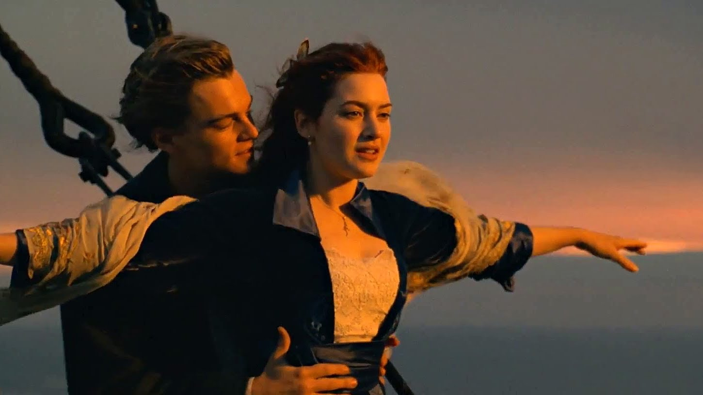
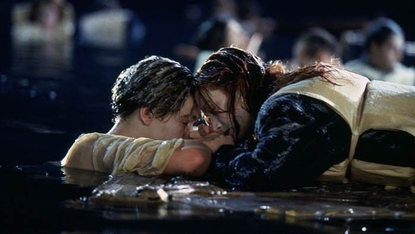

Genre: Romantik drama film
Release date: May 19, 2017(United States)
Everything, Everything is a 2017 American romantic drama film directed by Stella Meghie and written by J. Mills Goodloe, based on the 2015 young-adult novel of the same name by Nicola Yoon about the love of smart and inquisitive girl Maddy, unable by virtue of illness to go outside the rooms of her house, and her neighbor Olly, who wants to help her. The film stars Amandla Stenberg and Nick Robinson, and was released on May 19, 2017, by Warner Bros. Pictures. It received mixed reviews from critics and grossed $60 million worldwide.
Genre: Epic romance-disaster film
Release date: November 1, 1997 (Tokyo) ; December 19, 1997 (United States)
Titanic is a 1997 American epic romance-disaster film directed, written, co-produced and co-edited by James Cameron. A fictionalized account of the sinking of the RMS Titanic, it stars Leonardo DiCaprio and Kate Winslet as members of different social classes who fall in love aboard the ship during its ill-fated maiden voyage.Cameron's inspiration for the film came from his fascination with shipwrecks; he felt a love story interspersed with the human loss would be essential to convey the emotional impact of the disaster. The film was partially funded by Paramount Pictures and 20th Century Fox. It was the most expensive film ever made at the time, with a production budget of $200 million.
 Genre: Romantic fantasy film
Release date: February 13, 2015 (Berlin); March 13, 2015 (United States)
Cinderella is a 2015 American romantic fantasy film directed by Kenneth Branagh, with a screenplay written by Chris Weitz. The film is based on the eponymous folk tale and inspired in part by Walt Disney's 1950 animated film of the same name. The film stars Lily James as the titular character with Richard Madden, Cate Blanchett, Stellan Skarsgård, Holliday Grainger, Derek Jacobi, and Helena Bonham Carter. The film received an Academy Award nomination for Best Costume Design at the 88th Academy Awards.
Genre: Dark fantasy film
Release date: May 28, 2014 (United Kingdom); May 30, 2014 (United States)
Maleficent is a 2014 American dark fantasy film directed by Robert Stromberg from a screenplay by Linda Woolverton, and starring Angelina Jolie as the titular character with Sharlto Copley, Elle Fanning, Sam Riley, Imelda Staunton, Juno Temple, and Lesley Manville in supporting roles. Loosely based on Charles Perrault's original fairy tale and inspired by Walt Disney's 1959 animated film Sleeping Beauty, the film portrays the story from the perspective of the eponymous antagonist, depicting her conflicted relationship with the princess and king of a corrupt kingdom. Walt Disney Pictures announced the film's development in 2010, with Joe Roth as producer and Jolie, Don Hahn, and Michael Vieira as executive producers. The film received an Academy Award nomination for Best Costume Design at the 87th Academy Awards.